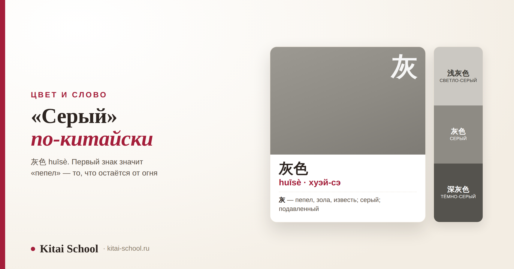
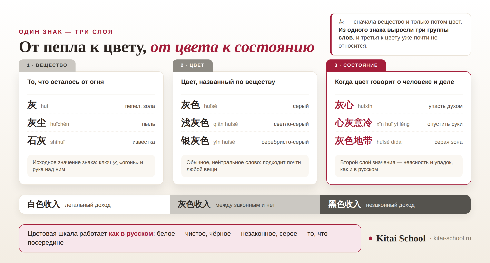

Цвет и слово
«Серый» по-китайски: 灰色 huīsè, чтение, написание и случаи, где это слово не подходит


Короткий ответ: 灰色, huīsè. Но у этого слова есть особенность, которая в словарной строке не видна. 灰 — это сначала вещество и только потом цвет: пепел, то, что остаётся от прогоревшего огня. Из этого вещества выросли и название цвета, и «серая зона», и выражение, которым описывают человека, опустившего руки. А ещё есть три ситуации, где русское «серый» переводится совсем не через 灰色.
灰色 huīsè — серый. 灰 — пепел, зола; шесть черт, ключ 火 «огонь». Читается «хуэй-сэ»: слог записывается hui, а средний звук в пиньине не пишут. Оттенки — 浅灰色, 深灰色, 银灰色. Не работает в трёх случаях: седые волосы, пасмурное небо и русские выражения со словом «серый».
Короткий ответ: как будет «серый»
Всё самое нужное — в четырёх строках.
- Серый цвет — 灰色, huīsè.
- По частям — 灰 huī «пепел, зола» плюс 色 sè «цвет».
- Про вещь — 灰色的车 huīsè de chē «серая машина», 灰色的毛衣 huīsè de máoyī «серый свитер».
- Тоны — huī первый, ровный и высокий; sè четвёртый, падающий.
Названия цветов в китайском устроены по одной схеме, и 色 в конце — её главная часть. Разбирать эту схему здесь я не буду, она разобрана отдельно и подробно: как устроены названия цветов через 色. Нам важнее то, что стоит перед 色.
Знак 灰: шесть черт и огонь под рукой
В знаке шесть черт, и ключ у него — 火 «огонь». Уже это подсказывает, что речь не о цвете: цвета ключом «огонь» не записывают.
Словарь «Шовэнь» описывает знак как огонь вместе со знаком руки. Смысл такой: это угли, которые уже остыли настолько, что их можно взять рукой. Не пламя, не жар — то, что остаётся после. Отсюда и весь набор значений: пепел, зола, извёстка, серый цвет, подавленное состояние.
Про то, как ключ подсказывает смысл знака и почему это главный приём запоминания, есть отдельный разбор: значение ключей в китайских иероглифах. А почему знаки забываются, даже если их честно прописали, — здесь: как запоминать иероглифы.
Слова, выросшие из пепла
Если смотреть только на цвет, многие слова с 灰 покажутся странными. Если помнить про пепел — всё встаёт на места.
| Слово | Чтение | Перевод | Откуда смысл |
|---|---|---|---|
| 灰 | huī | пепел, зола; известь | исходное значение знака |
| 灰尘 | huīchén | пыль | то же вещество, только мелкое |
| 石灰 | shíhuī | извёстка | строительный материал, не цвет |
| 灰色 | huīsè | серый | обычное слово для цвета |
| 灰心 | huīxīn | упасть духом | дословно «пепельное сердце» |
| 心灰意冷 | xīn huī yì lěng | опустить руки | та же мысль развёрнуто, устойчивое выражение |
| 灰色地带 | huīsè dìdài | серая зона | то, что не отнести ни к законному, ни к незаконному |
| 灰色收入 | huīsè shōurù | серый доход | между 白色收入 и 黑色收入 |

Отдельно стоит посмотреть на последнюю строку. 灰色收入 — «серый доход», и в китайских разборах он стоит ровно там же, где у нас: между 白色收入, доходом прозрачным и законным, и 黑色收入, доходом незаконным. Оценки объёма таких доходов в источниках расходятся в разы, поэтому цифр здесь не будет, но сама шкала устроена знакомо.
Где буквальный перевод подводит
Три случая, в которых переводчик подставит 灰色, а китаец скажет иначе. Все три встречаются постоянно.
Ученица переводила деловую переписку и принесла мне фразу, которая её озадачила. В письме стояло 灰色地带, и она перевела это как «серая местность».
Получилось загадочно: партнёр будто бы писал про какую-то территорию, которую надо прояснить. Она честно пыталась понять, о каком регионе речь.
Разобрались за минуту. 地带 — действительно «зона, полоса», но 灰色地带 целиком означает ровно то же, что наше «серая зона»: вопрос, который нельзя отнести ни к разрешённому, ни к запрещённому. Партнёр просил уточнить формулировку договора, а не рассказывал про местность.
С тех пор я предупреждаю об этом заранее: встретили цвет в деловом тексте — сначала проверьте, не метафора ли это. Чаще всего окажется, что метафора — и что она совпадает с русской.
Второй случай — седые волосы. По-русски седина серая, по-китайски — белая. Говорят 头发白了 tóufa bái le, дословно «волосы побелели». Вариант с 灰色 поймут, но звучать он будет как описание краски для волос, а не возраста.
Третий — пасмурное небо. «Серый день», «серое небо» — это по-русски. В китайском для такой погоды есть своё слово: 阴 yīn, а пасмурный день называют 阴天 yīntiān. Цвет тут вообще ни при чём, речь про отсутствие солнца.
Общее правило простое и работает не только с серым: переводите ситуацию, а не слово. Если русское выражение держится на цвете, стоит проверить, держится ли на нём китайское.
Как это звучит: почему hui — это «хуэй»
Со слогом hui у русскоязычных две отдельные сложности, и обе решаются в один приём.
Первая — чтение. Слог записывается тремя буквами, но звуков в нём больше: полная финаль здесь -uei, и средний звук в пиньине просто не пишут, чтобы не удлинять запись. Произносить его при этом нужно. Таких сокращённых записей в пиньине несколько, и это одна из причин, почему пиньинь нельзя читать по-английски: какие буквы в китайском языке.
Вторая — русская запись. В русской традиции этот слог передают как «хуэй» — именно так пишется, например, название народа 回族, хуэйцзу. Поэтому в шпаргалках и попадается «хуэй-сэ». Для того, чтобы сориентироваться, этого хватает; для того, чтобы поставить звук, — нет. Как ставят тоны и звуки, разобрано отдельно: корректировка произношения.
И про тоны. В 灰色 они разные: huī — первый, ровный и высокий, sè — четвёртый, короткий и падающий. Пара «ровный плюс падающий» встречается в китайском постоянно, так что это слово — хорошая тренировка.
Оттенки: от 浅灰色 до 银灰色
Отдельных слов для оттенков серого в китайском немного, зато они собираются по понятной схеме.
| Оттенок | Чтение | Перевод | Как собран |
|---|---|---|---|
| 浅灰色 | qiǎn huīsè | светло-серый | 浅 — «мелкий, светлый» |
| 深灰色 | shēn huīsè | тёмно-серый | 深 — «глубокий, тёмный» |
| 银灰色 | yín huīsè | серебристо-серый | 银 — «серебро» |
| 灰白色 | huībáisè | серовато-белый | сложение двух цветов подряд |
Знаки 浅 и 深 работают со всеми цветами одинаково, и это один из самых выгодных приёмов для начинающего: выучив два знака, вы удваиваете запас названий. Подробно этот механизм разобран там же, где и вся палитра: цвета на китайском с транскрипцией.
Серый в культуре: цвет без символики
Здесь придётся разочаровать тех, кто ищет за цветом древний смысл. У серого его нет — и это само по себе факт, который стоит знать.
В традиционной системе пяти «правильных» цветов — 青, 赤, 黄, 白, 黑 — серого нет вовсе: всё, что в неё не вошло, считалось смешанным. Как эта система устроена и что в ней значит каждый цвет, разобрано в отдельном путеводителе: значение цветов в Китае. У соседних цветов символики хватает: жёлтый цвет в Китае и фиолетовый цвет в Китае — обе истории стоят того, чтобы их прочитать.
В быту это самый обыкновенный цвет: серая машина, серое пальто, серый корпус телефона. Единственный устойчивый смысловой слой у 灰 — тот самый, что виден в 灰心 и 灰色地带: неопределённость и упадок сил. Про то, как чувство контекста меняет понимание слова, есть отдельный разбор на примере другого знака: весна по-китайски и чувство контекста.
Слово вроде 灰色 выучивается за минуту, а вот отличить, где цвет, а где метафора, — это уже навык, и он ставится на разборе живых текстов. С этим мы и работаем: онлайн-курсы китайского. Если хочется разбираться именно в знаках и их составе — есть курс иероглифики. Оставить заявку или написать в Telegram.
Частые вопросы (FAQ)
Как будет «серый» по-китайски?
灰色, в пиньине huīsè. Первый знак 灰 значит «пепел, зола», второй 色 — «цвет», и вместе получается название цвета. Про вещь говорят с 的: 灰色的车 (huīsè de chē) — «серая машина», 灰色的毛衣 (huīsè de máoyī) — «серый свитер». Тоны здесь разные: huī — первый, ровный и высокий, sè — четвёртый, падающий.
Как произносится 灰色?
Первый слог записывается как hui, но произносится не в две буквы: полная финаль здесь -uei, и средний звук в пиньине просто не пишут. В русской традиции этот слог передают как «хуэй» — так пишется, например, название народа 回族 хуэйцзу. Получается «хуэй-сэ», и эта запись годится, чтобы сориентироваться, но не чтобы учить произношение.
Что знак 灰 значит сам по себе?
Пепел и золу, а также извёстку; отсюда уже идёт значение «серый», а дальше — «подавленный, унылый». В знаке шесть черт, и его ключ — 火 «огонь». В словаре «Шовэнь» знак описан как огонь вместе со знаком руки: угли, которые остыли настолько, что их можно взять рукой.
Что такое 灰色地带 и 灰色收入?
灰色地带 (huīsè dìdài) — «серая зона»: то, что нельзя отнести ни к законному, ни к незаконному. 灰色收入 (huīsè shōurù) — «серый доход», и в китайских разборах он прямо противопоставлен 白色收入, то есть прозрачному и законному, и 黑色收入, то есть незаконному. Цветовая шкала здесь работает так же, как в русском, и переводить такие выражения через цвет не нужно.
Почему переводчик даёт 灰色 там, где китаец скажет иначе?
Потому что он переводит слово, а не ситуацию. Седые волосы по-китайски не серые, а белые: говорят 头发白了 (tóufa bái le). Пасмурное небо тоже не серое — для него есть своё слово 阴 (yīn), и день называют 阴天 (yīntiān). Само по себе 灰色 при этом совершенно нормальное слово: ошибка не в нём, а в попытке перевести русское выражение по цвету.
Есть ли у серого в Китае особое значение?
Собственной символики у него нет. В традиционной системе «правильных» цветов — 青, 赤, 黄, 白, 黑 — серого нет вовсе, всё остальное там считалось смешанным. И траурный цвет в Китае белый, а не серый, так что привычная русскому уху связка «серый — мрачный, похоронный» здесь не работает. Единственный устойчивый смысловой слой у 灰 — неопределённость и упадок сил.
Пусть за каждым знаком открывается история! 一字一世界！
Источники
- Значения знака 灰 (пепел, зола, известь; серый; подавленный), число черт — шесть — и ключ 火 приведены по словарным данным. Описание из словаря «Шовэнь» — огонь вместе со знаком руки, то есть остывшие угли, — тоже оттуда.
- Значения слов 灰尘, 石灰, 灰心, 心灰意冷, 灰色地带 сверены по словарям.
- Противопоставление 灰色收入 доходам 白色收入 и 黑色收入 приводится по китайским разборам самого понятия. Оценок объёма «серых доходов» в статье нет намеренно: цифры в источниках расходятся в разы, и сравнивать их некорректно.
- Происхождения выражения 灰色地带 и дат его появления я не нашла в надёжных источниках, поэтому в статье их нет.
- Передача слога hui в русской традиции как «хуэй» — по сложившейся практике записи китайских названий; пример — народ 回族, хуэйцзу. Встречаются и другие варианты записи.
- Состав пяти «правильных» цветов (青, 赤, 黄, 白, 黑) и то, что серого среди них нет, — по традиционной классификации, разобранной в нашем путеводителе по символике цвета.
- Практика Kitai School: разбор деловых текстов с учениками и типичные ошибки буквального перевода цветовых выражений.